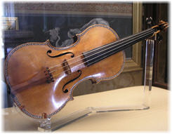
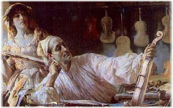
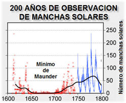

El misterio Stradivarius
Seguramente has escuchado hablar de los violines Stradivarius, los míticos instrumentos que representan la perfección artesanal.
Stradivari es un apellido italiano que ha quedado permanentemente ligado a los violines debido a Antonio Stradivari, un fabricante de instrumentos de cuerda (como violonchelos, arpas, guitarras y, claro, violines) que vivió a finales del siglo XVII y principios del XVIII. Los violines que fabricó son de una calidad hasta la fecha insuperable.
Durante años, o quizás siglos, la pureza del sonido de un violín Stradivarius ha sido causa de que se haya estudiado a estos instrumentos, para determinar qué los hace tan perfectos. Y en este verano del 2008, se dan a conocer estudios que explican parte del misterio.
Calidad Stradivarius
Muchas veces se ha intentado explicar (buscando conseguir duplicar) el sonido de los Stradivarius, sin mucho éxito. Estos estudios han ido desde analizar el grosor del cuerpo del violín, el diseño del arqueado y del contorno, el impacto de las capas de barniz, el ángulo del cuello, la composición del barniz y de los pegamentos usados por Stradivari, etcétera.
Incluso hubo la teoría de que la madera era antigua (con respecto a Stradivari), y que había sido recolectada de catedrales viejas.
Sin embargo una teoría del año 2003 (enlace en inglés), ya apuntaba a que la explicación debía buscarse en el clima de la época en que fueron fabricados los Stradivarius.
Esta teoría afirma que la calidad del sonido se debe a la densidad superior de la madera con que fueron hechos los instrumentos. Y que esta alta densidad se debió a las bajas temperaturas que hicieron lento el crecimiento de los árboles, todo debido a la ‘Pequeña Edad de Hielo‘ que alcanzó su período más frío durante la vida de Antonio Stradivari (nacimiento en 1644 – muerte en 1737).
(La ‘Pequeña Edad de Hielo‘ es un periodo de bajas temperaturas que ocurrió en la Edad Media, principalmente en Europa. En el tema que nos ocupa, los Stradivarius fueron fabricados durante uno de los puntos más fríos de ese periodo, el Mínimo de Maunder, un período en el que las manchas solares prácticamente desaparecieron, y que duró de 1645 a 1715. A un costado una gráfica ilustrando este período.)
Esta teoría se ha visto respaldada hace unos días, al darse a conocer un estudio (enlace en inglés), en el que usando un scanner TAC (tomografía axial computarizada), es decir rayos X, se comprobó que la madera utilizada en los violines Stradivarius es de una densidad excepcionalmente uniforme.
¿Esto qué significa? Habitualmente, el crecimiento de los árboles es más rápido en verano que en invierno, lo que causa que la madera de los anillos de cada temporada tenga diferente densidad.
Lo que se ha demostrado es que en esa época, el ritmo de crecimiento en verano e invierno era extremadamente similar a causa de la Pequeña Edad de Hielo, lo que significó madera compacta y uniforme. Así pues tenemos la explicación de la superioridad de los violines Stradivarius en los materiales con que fueron construidos.
Esta teoría al parecer explicaría la incapacidad de posteriores fabricantes para replicar el trabajo de Antonio Stradivari. Pero sin duda, el cuidado en el detalle y la perfección artesanal también tienen mucho que ver con la calidad de los instrumentos.
Todo esto de la Edad de Hielo, y la época de la que estamos hablando, me lleva a recordar a un contemporáneo de Antonio Stradivari, que lleva su mismo nombre: Antonio Vivaldi.
Conciertos para violín: ‘Las cuatro estaciones’
Vivaldi (1678-1741) es famoso por su composición ‘Las Cuatro Estaciones‘, pero el también vivió en esa época de bajas temperaturas. Lo cual me hace pensar sobre el origen de su inspiración para Primavera y Verano, cuando en ese período lo que se vivió en Europa fue un largo invierno. ^_^
Bromas aparte, los invito a disfrutar del sonido de solos de violín (aunque no sea un Stradivarius), en un fragmento de las Cuatro Estaciones.
Extra: Las Cuatro Estaciones fueron escritas para ser acompañadas por cuatro sonetos, uno por cada estación, les dejo una traducción del inglés del fragmento correspondiente al 3er. movimiento de ‘Verano’.
¡Ay de él! Sus temores eran justificados. Los Cielos relampaguean y rugen, y majestuosamente cortan la cabeza del trigo y dañan el grano.
Escuchen el inconfundible inicio de esta obra a cargo de la sección de cuerdas, y los 3 breves solos de violín (espero haber contado bien).
A continuación: Tercer movimiento de ‘Verano‘ de Antonio Lucio Vivaldi.
Clip de audio: Es necesario tener Adobe Flash Player (versión 9 o superior) para reproducir este clip de audio. Descargue la versión más reciente aquí. También necesita tener activado Javascript en su navegador.
Interpretación a cargo de:
- Wichita Symphony Orchestra – Ensemble: WSU Chamber Players
- Violín: John Harrison, profesor asociado de violín en la WSU
Lectura inicial: Wired: Secrets of Stradivarius Explained
Enlace al reporte completo del estudio: PLoSone: A Comparison of Wood Density between Classical Cremonese and Modern Violins
*Música distribuida bajo licencia Cc-by-sa otorgada por el ejecutante.
Metadatos y acciones
 Temas: ciencia, clima, musica ⋅
Para guardar: Enlace permanente a esta anotación.
Temas: ciencia, clima, musica ⋅
Para guardar: Enlace permanente a esta anotación.
 Print This Post
Print This Post
Comentarios
Los comentarios están cerrados.
Categorías
Últimas 4 anotaciones
Últimas anotaciones en cada categoría

Divulgación
El dinero no fomenta la creatividad: Daniel Pink en TEDGlobal 2009

Inspiración
Los 30 no son los nuevos 20

Noticias
Ver tu mente en tiempo real: Christopher deCharms en TED 2008
![Música en la era digital [Animación]](../../../wp-content/themes/tma/images/featured/animation_04_2009_featured.jpg)
Ocio
Música en la era digital [Animación]
julio 17, 2008, 1:17 pm
ke chido que pusiste la musica, pero dejas con ganas de mas…
dos minutos y se akaba el concierto jajaja
noviembre 17, 2008, 3:22 am
yo opino que stradivarius, era un hombre egoista y que se llevo con el su secreto en la tumba, y que no deveriamos imitar este acto…porque el se guardo su talento para el solo sin dejar que sea util a las generaciones sigientes…
junio 19, 2009, 1:41 pm
vendo un violin stradivarius 1736
junio 29, 2010, 6:16 pm
Me parece que no existe la manera de duplicar algo perfecto. Stradivari seguramente era muy abio y tuno razón en sólo fabricar pocos, por que esos violines son los mejores, dejen de buscar el misterio, sólo tóquenlo, supongo que el hecho de afinarlo ya es un privilegio.